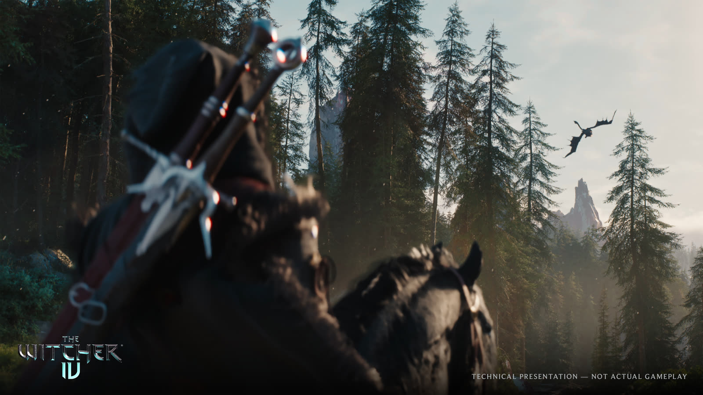

The School of the Lynx
A witcher school the games have never shown, with its own medallion, its own training and its own quarrel with the guilds that outlived it.
CD PROJEKT RED
A new saga begins. Ciri takes the Path — and the Continent has never been colder.

Chapter one
For the first time in the series, the player is not Geralt. Ciri carries the story now — a full witcher of her own school, taking contracts on a Continent that has not forgiven her for what she is. Geralt returns in a supporting role, with Doug Cockle back in the part.
The new saga opens in the far north, in a kingdom the novels named often and no game ever let you walk. More than five hundred developers are building it, and it is the studio’s first Witcher game outside its own engine.
What is new
A witcher school the games have never shown, with its own medallion, its own training and its own quarrel with the guilds that outlived it.
The rich northern kingdom the books keep mentioning becomes a playable region, inside an open world about the size of the one in Wild Hunt.
Hardware-accelerated Lumen, Nanite Foliage and RTX Mega Geometry, developed console-first on PlayStation 5 and scaled up from there.
Kelpie answers a summon and runs on a new animation system that simulates muscle movement, alongside multi-character motion matching.
Gallery
Stills from the Unreal Engine 5 technical presentation that CD PROJEKT RED ran on a PlayStation 5.
Kovir — new playable region, 2028
Media
A silent montage I cut myself from CD PROJEKT RED’s published Unreal Engine 5 stills. It has no audio track, so there is nothing to caption. Not gameplay footage.
Field notes
Open any card for the full entry.
Take the Path
A demonstration form for this coursework. It validates in the browser and sends nothing anywhere.
Cirilla Fiona Elen Riannon has been the axis of the Witcher story since the first novel, and in the fourth game she finally carries it herself. She is a witcher by choice rather than by mutation, which makes her an awkward fit for a profession that has always defined itself by what was done to its members.
Ciara Berkeley takes over the role. Doug Cockle returns as Geralt, who appears in support rather than in the saddle.
Kovir and Poviss sit at the top of the map, rich on salt, glass and careful neutrality while the south tears itself apart. The books reference the kingdom constantly. No Witcher game has ever let you set foot in it.
The studio has said the open world is roughly the size of the one in Wild Hunt — not a larger map, a differently built one.
The reveal trailer opens on a contract in a remote village that has been losing people to something in the dark for generations — and has arranged its whole year around feeding it. The creature is shown almost entirely in torchlight.
The trailer was pre-rendered in a custom Unreal Engine 5 build using in-game assets and models, produced with Platige Image.
Kelpie answers a summon rather than waiting where you left her. She runs on an animation system built specifically for this game, simulating muscle movement under the coat instead of blending canned gaits.
The same multi-character motion matching work drives how riders and crowds move around her.
Nanite Foliage means the ferns at your feet and the canopy above you are the same asset at full geometric detail, rather than a billboard that pops in as you approach. Hardware-accelerated Lumen lights it, and NVIDIA RTX Mega Geometry keeps the ray tracing tractable.
The demo ran on a PlayStation 5. The studio is building console-first this time and scaling up, the reverse of its usual order.
The market sequence is the part of the demo that is hardest to fake: hundreds of villagers in one frame, each with a destination, an errand and a reason to get out of your way. Crowds are the difference between a settlement you walk through and one you believe in.
More than five hundred developers are working on the game, making it one of the largest productions in the studio’s history.